Assignment 2
Part 1.1: Convolutions from scratch
Convolution with 4 loops
I implemented convolution with 4 loops as follows:
def convolve4loops(image, kernel):
kernel = np.flip(kernel)
pad_1 = kernel.shape[0] // 2
pad_2 = kernel.shape[1] // 2
image_x = image.shape[0]
image_y = image.shape[1]
image = np.pad(image, ((pad_1,pad_1), (pad_2,pad_2)))
out_image = np.zeros((image_x, image_y))
for ix in range(image_x):
for iy in range(image_y):
for kx in range(kernel.shape[0]):
for ky in range(kernel.shape[1]):
out_image[ix][iy] += kernel[kx][ky] * image[ix + kx][iy + ky]
return out_image
2 loop implementation:
def convolve2loops(image, kernel):
kernel = np.flip(kernel)
pad_1 = kernel.shape[0] // 2
pad_2 = kernel.shape[1] // 2
image_x = image.shape[0]
image_y = image.shape[1]
image = np.pad(image, ((pad_1,pad_1), (pad_2,pad_2)))
out_image = np.zeros((image_x, image_y))
for ix in range(image_x):
for iy in range(image_y):
crop = image[ix:ix + kernel.shape[0], iy:iy + kernel.shape[1]]
out_image[ix][iy] = np.sum(crop * kernel)
return out_imagescipy.signal.convolve2d on a picture of my face, using the 9x9 box filter. The scipy function adds the padding to the final image, resulting in a final image with size 383x508 from an original image of size 375x500, as opposed to my two functions, which add padding to the image before convolution, but produce a final image with the same size as the original image, and thus both output a final image with size 375x500. Otherwise, my functions and the scipy function seem to produce the same image. To complete the convolution, the 4 loop function takes around 19 seconds, the 2 loop function takes about 2 seconds, and the scipy function takes about 1 second.
The 2 loop function is at least on the same magnitude as the scipy function in terms of runtime (at least for this image), but the 4 loop function is obviously much slower.
Results for convolution
Original image
4 loop convolution, box filter
2 loop convolution, box filter

scipy convolution, box filter
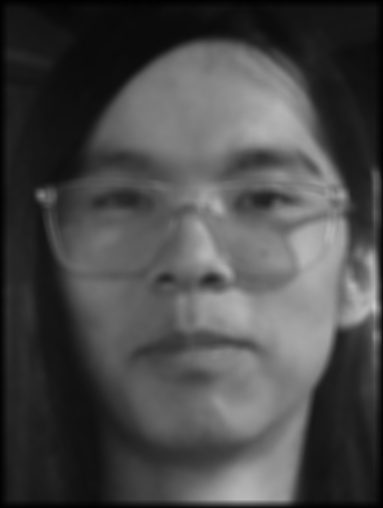
2 loop convolution, D_x filter
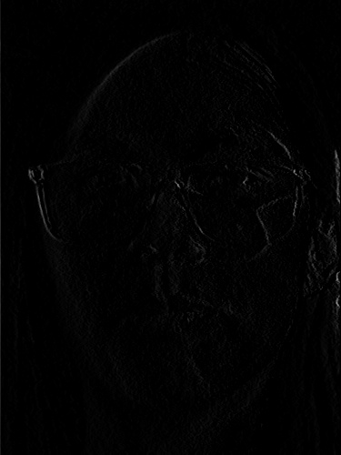
2 loop convolution, D_y filter
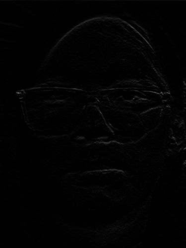
Part 1.2: Finite difference operator
I did convolution on the cameraman image using the scipy.signal.convolve2d using the d_x and d_y filters from the previous part.
To make it so that the resulting images are the same size, I used the argument mode="same" in scipy.signal.convolve2d. Here are the results for the d_x and d_y filters:
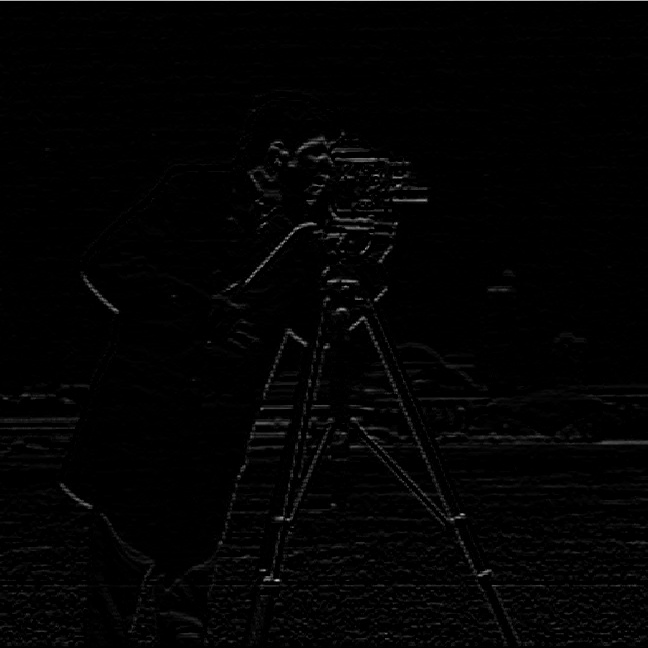
To make the gradient magnitude image, I simply added the square of the pixel values of the D_x and D_y convolutions together, and then took the square root of all the pixels in the image.
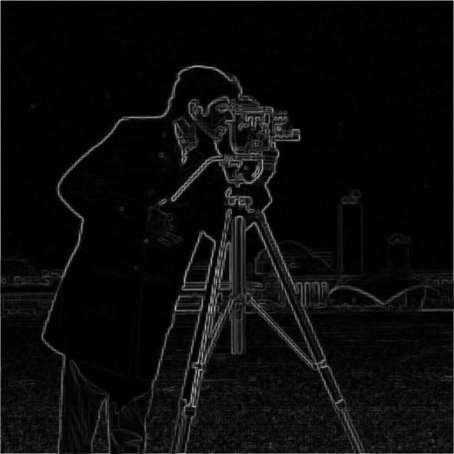
For binarizing the image, I picked a cutoff point of 44. This was the highest cutoff point that still generated a sufficient outline of the subject's face (in my opinion), and the noise in the image isn't overwhelming. Moving the cutoff any higher removes all definition of the left edge of the chin.
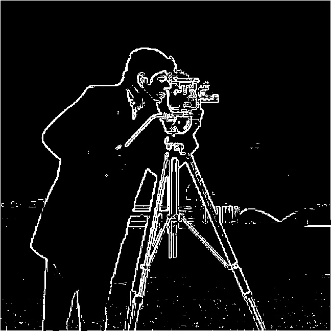
Part 1.3: DoG filter
For the gaussian kernel, I chose an arbitrary kernel size of 5x5 and an arbitrary standard deviation of 1. I didn't mess with these too much because I think the end result with these parameters is good enough. The blurred image (on the right) keeps most the detail, but looks a lot less grainy than the original (left).
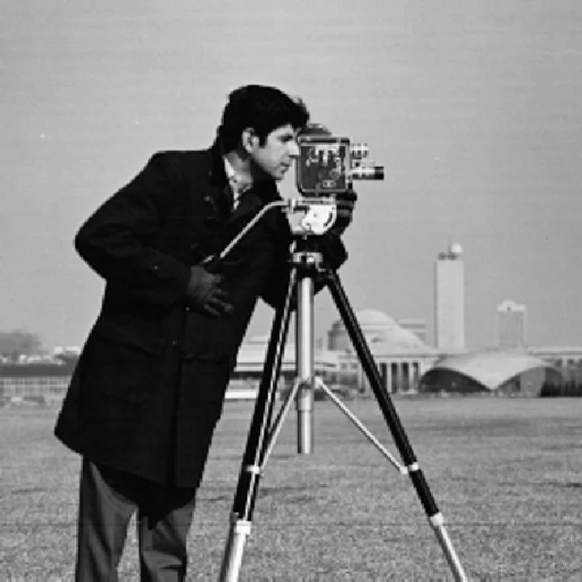
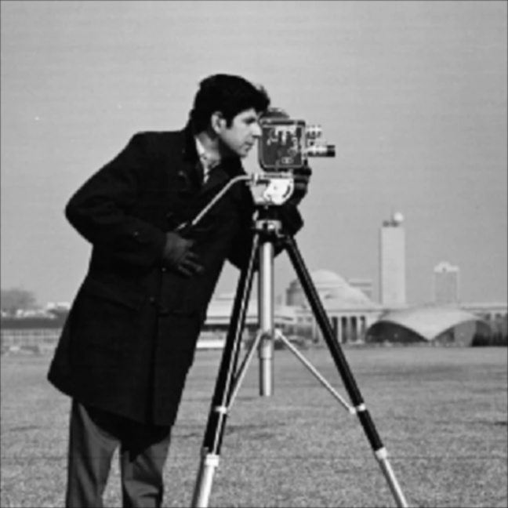
The D_x and D_y filtered images (left and right, respectively), and the gradient magnitude image (below), are created in the same way as in part 1.3.
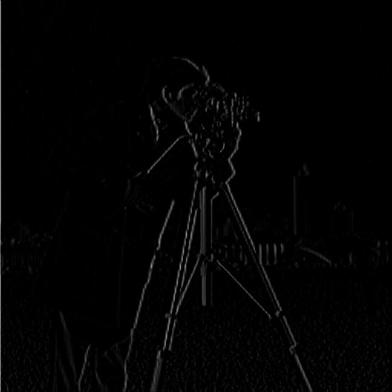
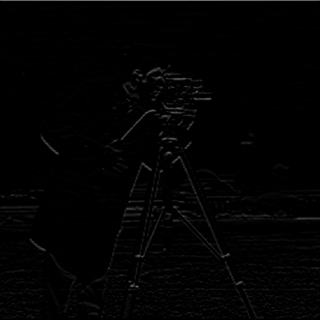
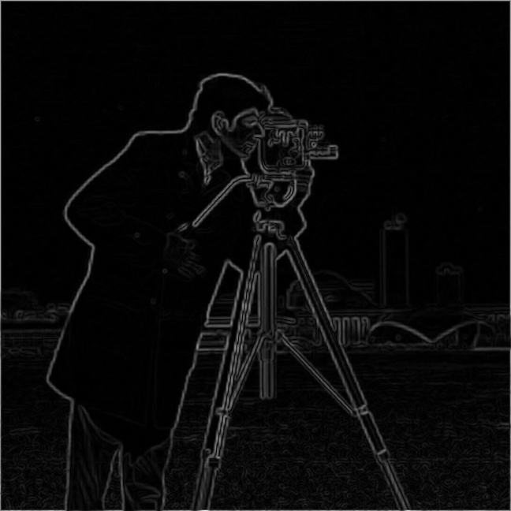
Using the same binarization cutoff of 44, the chin definition is now missing, but all the hard edges of the person are much smoother now, and there's much less noise in the image. The outlines of the buildings in the background are also less noisy now.
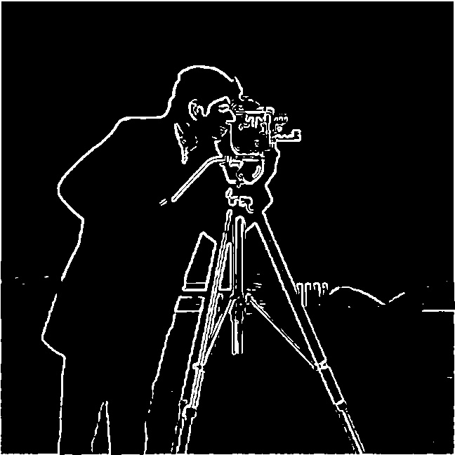
By tuning the cutoff point to 36, we can get the chin back, and still end up with significantly less noise than previously.
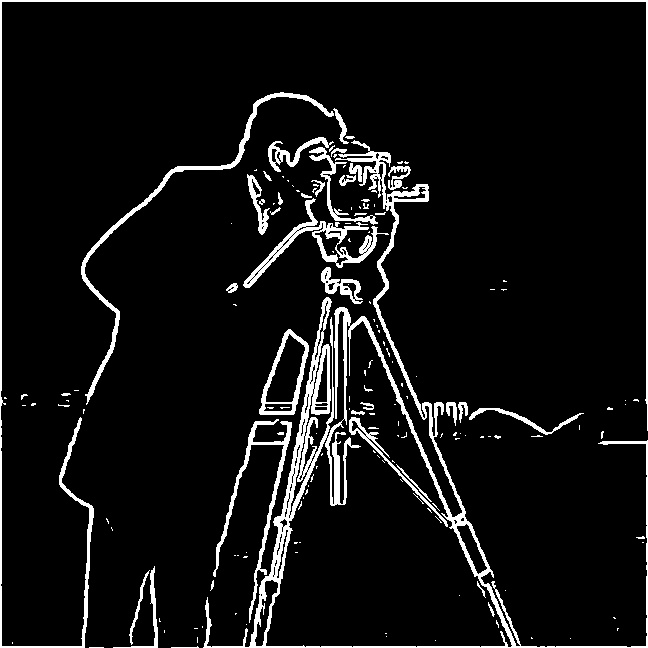
We can combine the gaussian filter and either the D_x/D_y filter into one by convolving the Gaussian filter with the D_x/D_y filter. In this case, I'm not using mode="same" in the convolve function, so that we aren't losing any part of the resulting convolution.
The resulting filtered image differs from the original in only the first and last columns and rows, I think this is due to the fact that in the first case we convolve twice mode="same" compared to only doing so once in the second case. Outside of the first and last columns and rows, all pixel values are nearly identical (maximum absolute difference between 2 pixels is on the order of 10^-13).
Shown below: Original (2 convolution) D_x of Gaussian (left) vs one convolution D_x of Gaussian (right)
For D_y:
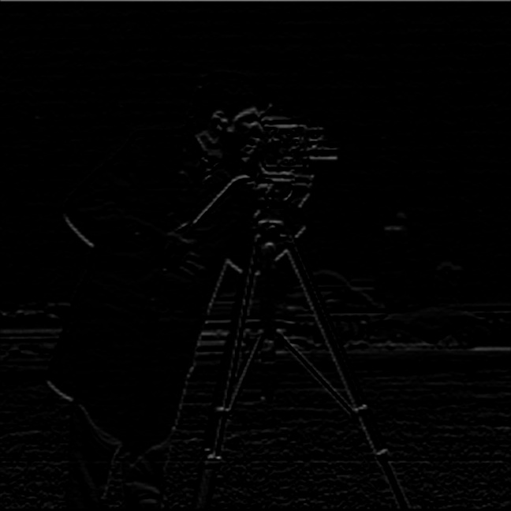
Bells and Whistles
I used color to visualize gradient orientations using the HSV color space: For each pixel, I took the inverse tangent of its D_y gradient divided by its D_x gradient to get the gradient orientation, and used that to determine the hue (which is on a scale of 0 to 179 in the cv2 library). I gave each pixel a saturation of 255, and the value is simply the gradient magnitude.
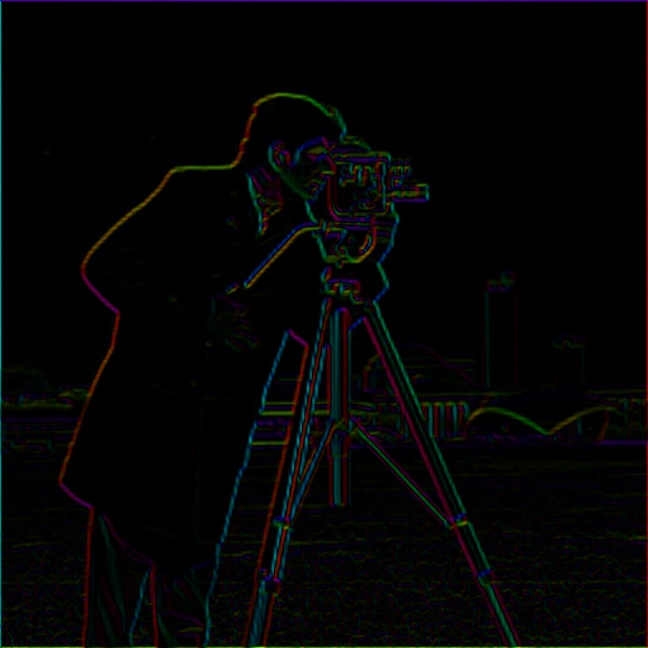
Part 2.1: Image "Sharpening"
To create the low pass gaussian filter, we use the same method as in part 1, using the outer product of cv2.getGaussianKernel(5,1). Since we're working with color now, we also add an extra dimension for the convolution to work, so the filter is size 5x5x1.
Again, the choice of a width of 5 and standard deviation of 1 here is arbitrary, but was found to work well enough. Shown below are the original image and the image after applying the low pass filter.

We get the high frequencies by subtracting the low pass filter from our original image.
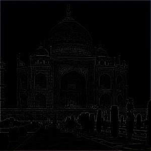
We can add this high frequency image to the original to get a sharpened image. I added the high frequency image twice here to make the effect on the sharpened image (right) more visible compared to the original (left).
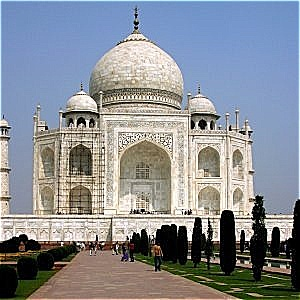
We can combine these steps into a single convolution by creating an identity filter I (all zeros, except a 1 in the middle of the matrix) of the same size as the Gaussian filter (which we will denote G), calculating our high frequency filter as before, and calculating our final filter to be as I + s * (I - G), where s is the sharpening amount.
def create_sharpening_filter(sharpening_amt):
identity_filter = np.zeros((5,5,1))
identity_filter[2,2,0] = 1
high_freq_filter = identity_filter - gaussian_kernel_3d
return identity_filter + sharpening_amt * high_freq_filter
When we vary the sharpening amount, we can see that the edges of objects become more pronounced, but noise in the image also becomes more visible.
Displayed below are the image sharpened by 2x (i.e. the high frequency image is added twice), 4x and 8x. There is visible noise in all of them, but you can see clearly see significant artifacts in the sky and around the top of the building in the 8x sharpened image.
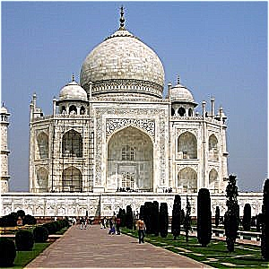
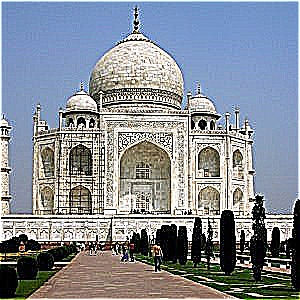
Starting with an an image of a butterfly specimen,
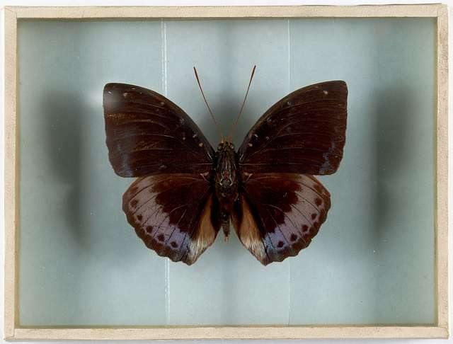
I tried blurring and re-sharpening the blurred image, and compared the result to the original. Below is the blurred image:
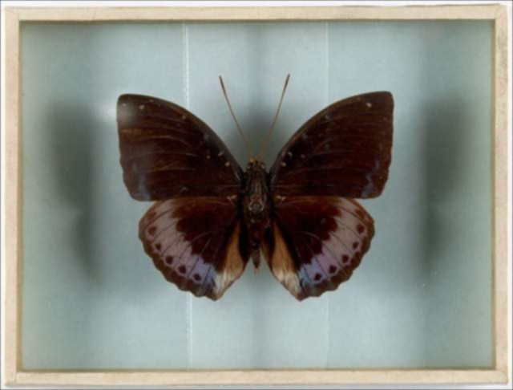
And here is the comparison between the original image (top) and resharpened image (bottom). Resharpening was done at 4x strength, as I didn't feel the effect was visible enough at lower strength:
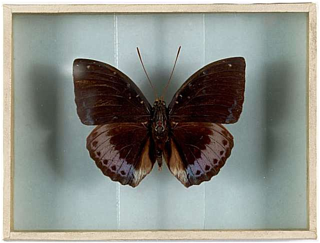
I don't think the result was particularly impressive. The edges on the resharpened image are more clear than in the blurred image, but compared to the original image, it's clear that the resharpened image is missing some finer definition in the patterns and along the edges of the butterfly's wings.
Part 2.2: Hybrid images
Note on alignment
I made a few changes from the provided MATLAB alignment function, specifically I wanted to reduce the amount of black space around the image. I'm using the eyes as my keypoints (which are generally closer to the top of the image), so when I did a Python translation of the original alignment method there would be a significant amount of extra padding above the image, since the original method tries to make the center of the keypoints the center of the entire image.The images I'm planning on using don't have that much important details around the edges, so I'm fine with some of the edge being cropped off.
Process
These are the two images I'm starting out with:
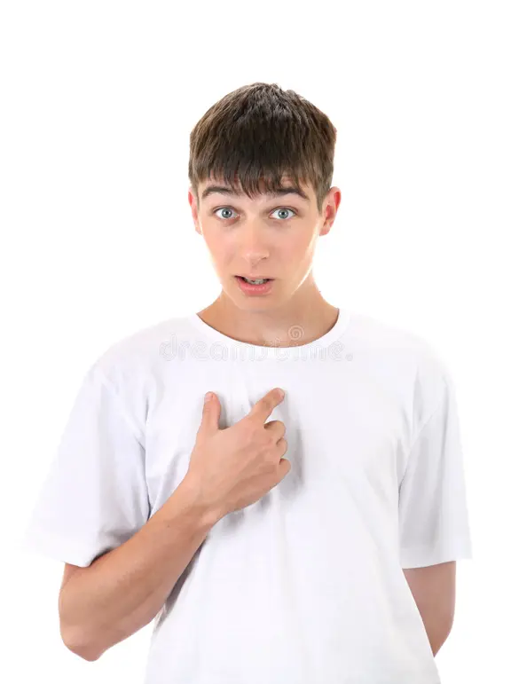
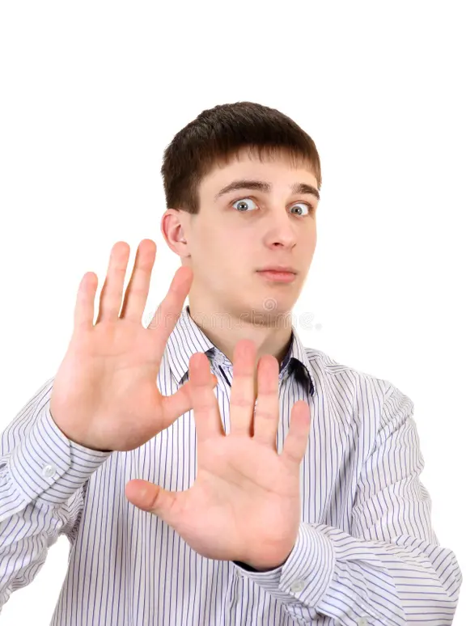
After converting to grayscale and alignment, they look like this:
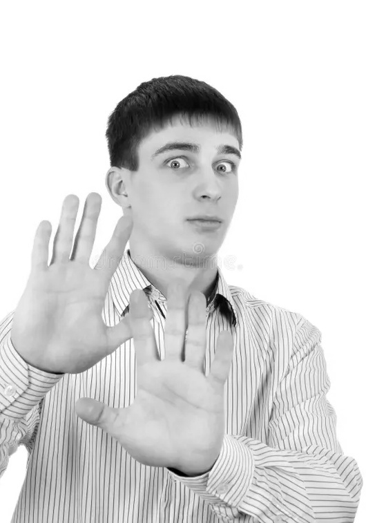
The low pass and high pass filters are similar to those used previously in the assignment. The low pass filter is the outer product of a 1D gaussian kernel, and the high pass filter is the original image minus the low pass filter. Unlike previous parts, though, I decided to use a width of 30 for the kernel instead of 5, just to make sure that I'm getting a good enough approximation of the full gaussian kernel, as I found that I needed to use much larger standard deviations for the effect to work correctly. Here are the images after applying the low and high pass filters:
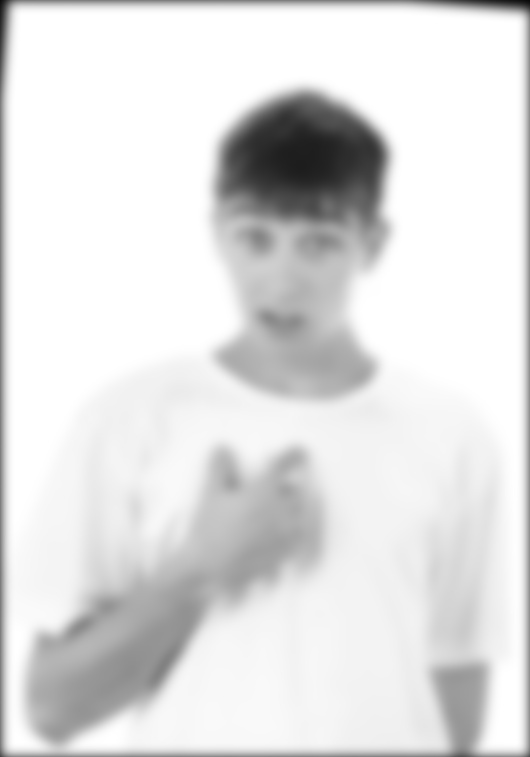
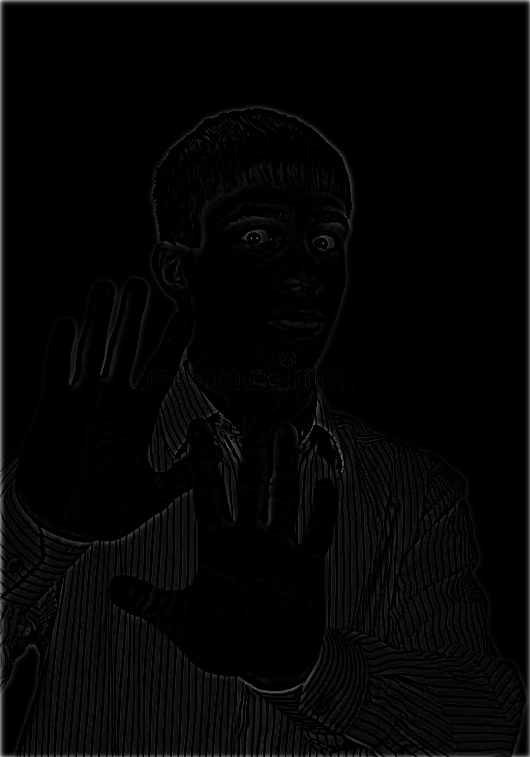
And combined, for the final hybrid image:
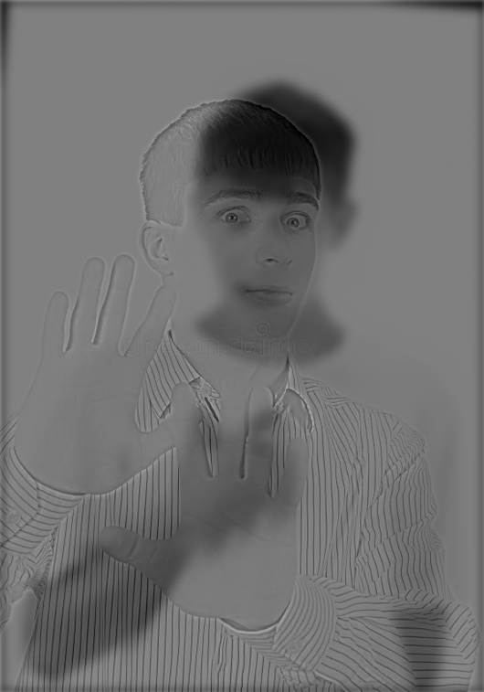
The cutoff frequency definition in the paper is equal to the frequency for with the amplitude gain of the filter is 1/2, which should have a 1-to-1 relationship with standard deviation of the Gaussian filter. The standard deviation for the low-pass image was the lowest that I felt made it not significantly conflict with the high-pass image at close range (the "placeholder" high pass was arbitrarily set just to get a good enough idea of the image). For this image, I landed on a standard deviation of 6 for the low pass filter. After that was decided, I adjusted the cutoff frequency for the high-pass filter to the highest value that I felt didn't interfere with the low-pass image at a distance (the distance itself being the length of my room, around 18ft). For the high pass filter, I landed on a standard deviation of 2.5.
Fourier Transforms
The images were cropped by 30 pixels on each side so as to not capture any patterns caused by padding.
Image 1 (Boy pointing at himself)
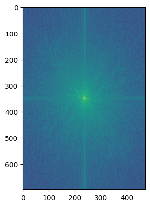
Image 1, low pass
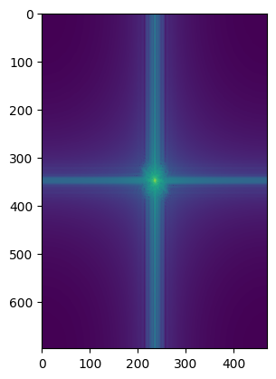
Image 2 (boy with hands up)
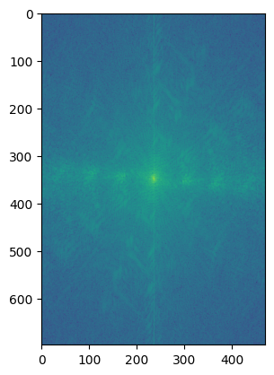
Image 2, high pass
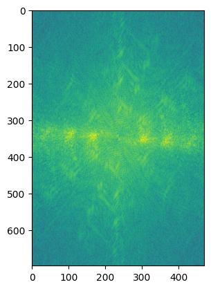
Final hybrid image
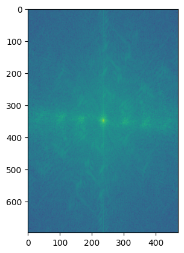
We can clearly see a lack of frequencies outside the main x and y axes in the low pass of image 1, and the reduction in frequencies around the center for the high pass of image 2.
Other Images
Derek and Nutmeg:
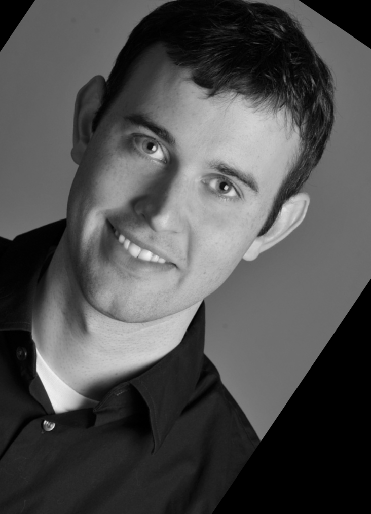
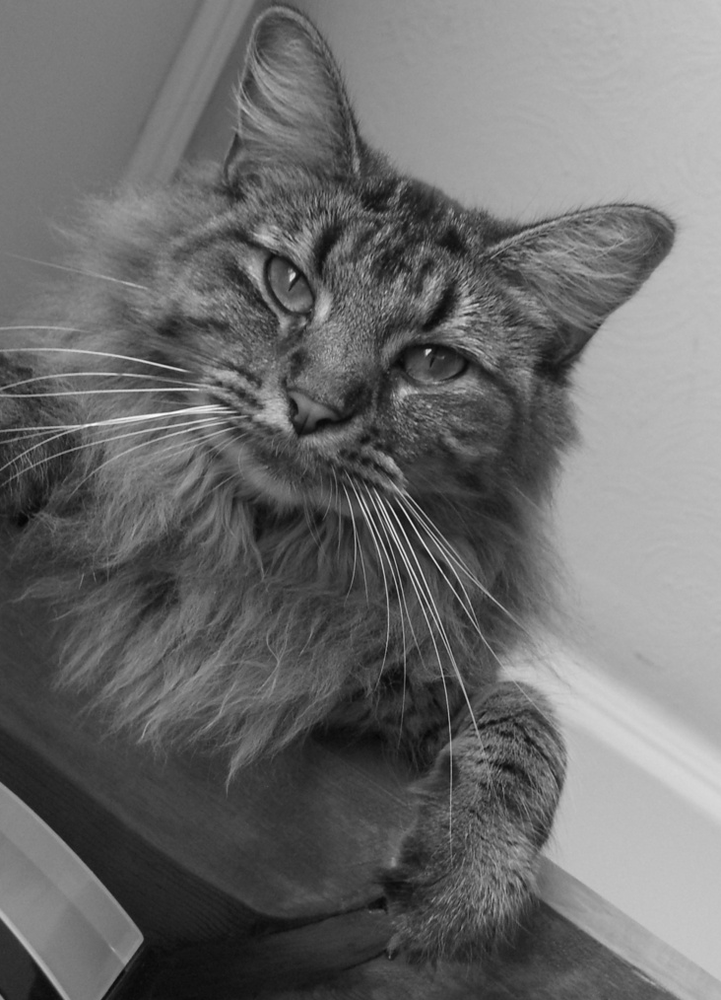
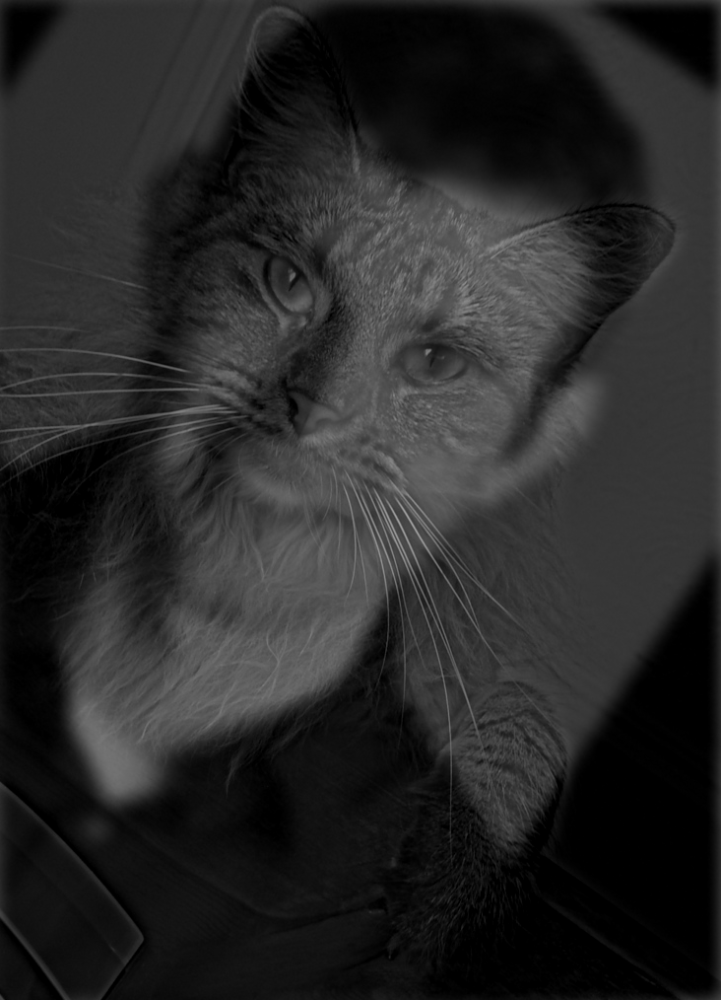
For this one, I still see cat-like features even from a distance, but I also feel that way for the example in the assignment, so I'm just going to say it's good enough.
Chiikawa and XXXTENTACION:
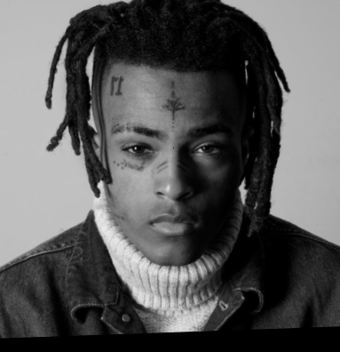
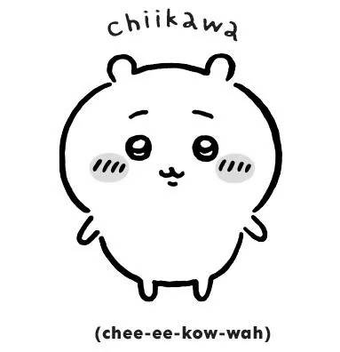
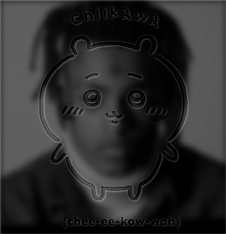
I tried this out as a silly idea, and it honestly worked better than I expected. I thought that since the Chiikawa picture was lacking texture it might not work very well as a hybrid image, and when I initially tried using Chiikawa as the low pass image I didn't like the result, but when using Chiikawa as the high pass image I think it works OK.
Bells and Whistles: Color
Low pass colorized only
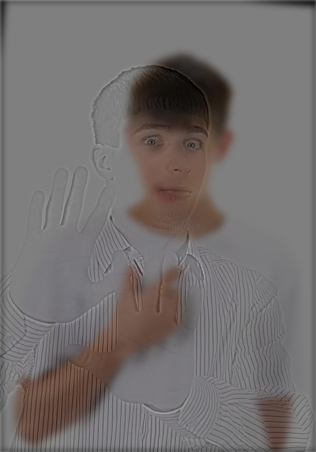
Colorizing the low pass filter only worked well, in my opinion it's now much clearer from farther away and from close up the high pass filtered image still dominates.
High pass colorized only
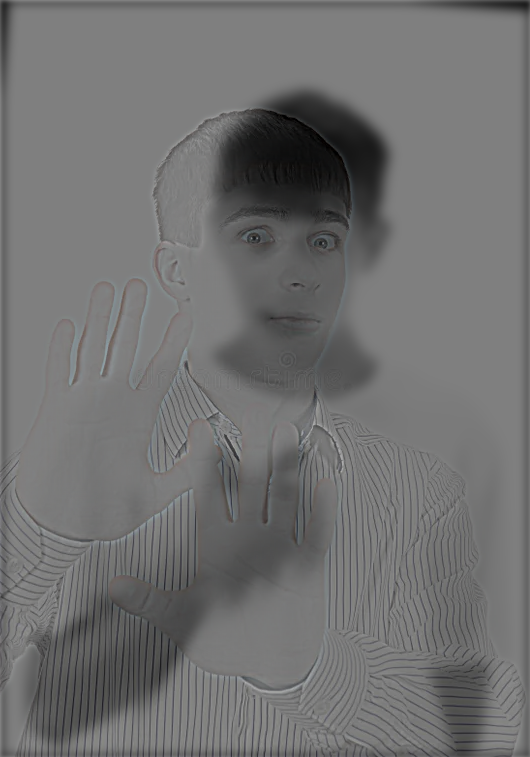
Colorizing the high pass filter only doesn't do much. I feel like there is a bit of skin tone visible on the hands, but it's really subtle and the high-pass part looks a bit "ghostly" due to the blue fringing on the right of the hands and face (although it already looked kind of ghostly in black and white). I wouldn't say it's worse than when both are grayscale, but I don't think it's all that much better. It makes sense that the high pass filtered image doesn't contain much color, since most pixels should be similar color to their neighbors.
Both colorized
Colorizing both images produced a similar result to colorizing just the low-pass image. Compared to grayscale, I like the result better from far away, and from close up it still looks fine.
Part 2.3: Gaussian and Laplacian Stacks
I implemented Gaussian stacks by starting with a base width and standard deviation for the Gaussian kernel (again, generated by using the outer product of cv2.getGaussianKernel).
The first layer is just the image itself, the second layer is the image with the Gaussian filter applied, and for each layer after that, the width and standard deviation of the kernel is multiplied by 2,
and then applied to the original image again. The total number of layers is equal to the highest value n such that 2^n does not exceed the length or width of the image.
For the Laplacian stacks, I just set it so that the i-th level of the Laplacian stack is equal to the difference between the i-th and i+1-th level of the Gaussian stack, except for the last level, which is simply equal to the last level of the Gaussian stack.
For the apple's mask, I simply took started with an image that was pure white on the left half and pure black on the right half (vice versa for the orange), and created a Gaussian stack out of it. Then, I made Laplacian stacks for both fruits, and multiplied each layer of the fruit's Laplacian stack by the corresponding layer for its mask's Gaussian stack.
For the mask specifically, I had to create a special function to generate the Gaussian stacks, because with zero padding the resulting image would be very dark at higher levels, since the kernel starts approaching the size of the image itself, and the built in symmetric padding ran extremely slowly for some reason. This wasn't as much of a problem for the images themselves (the effect is partially offset by the fact that we're taking differences of Gaussians instead of Gaussians directly), plus implementing custom padding when the image isn't such a simple mask is a bit more complicated, so I didn't bother doing a special implementation there.
Here are the original images of the apple and orange, for reference:

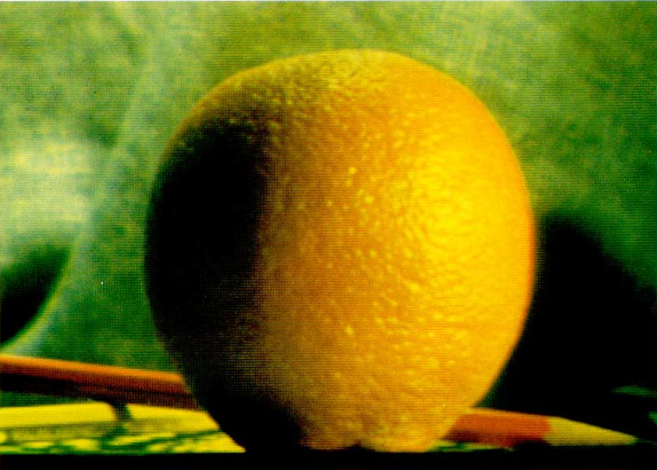
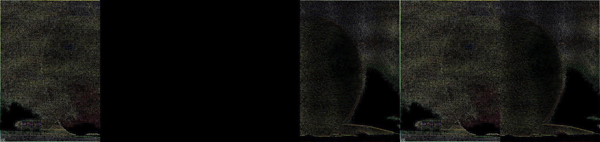
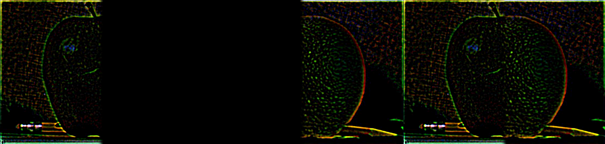
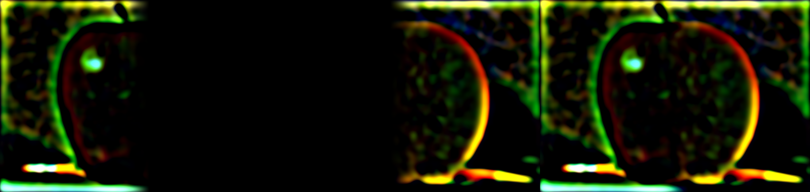
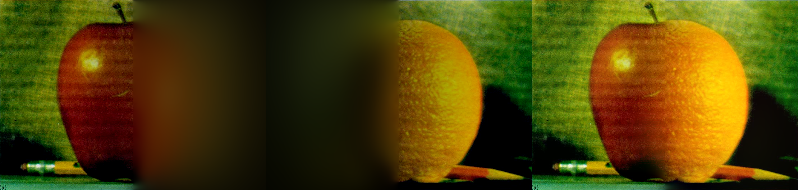
Part 2.4: Multiresolution Blending
Section 1 of this part of the question basically asks for the same thing that was already done in part 2.3. Refer to part 2.3 for the details of the Gaussian/Laplacian stack implementation, and the generation of the oraple figure.
For section 2, the first image combination I tried was to make a school of fish in the shape of a fish. Here are the two images I used:
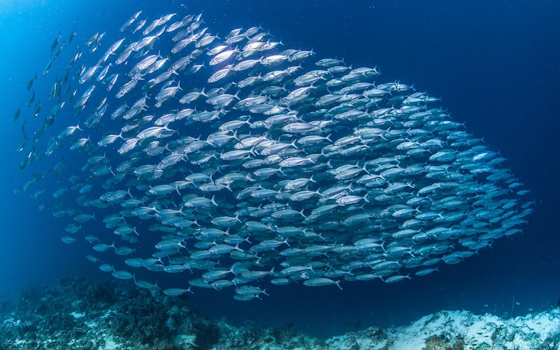
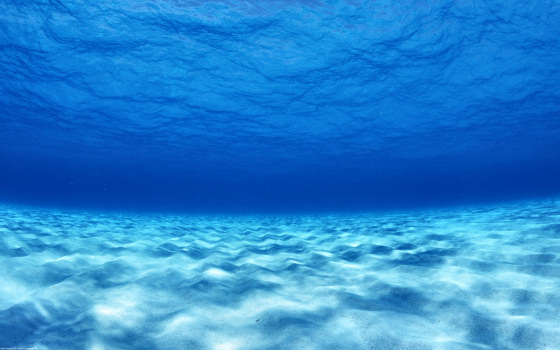
and the mask:

This is the final result:
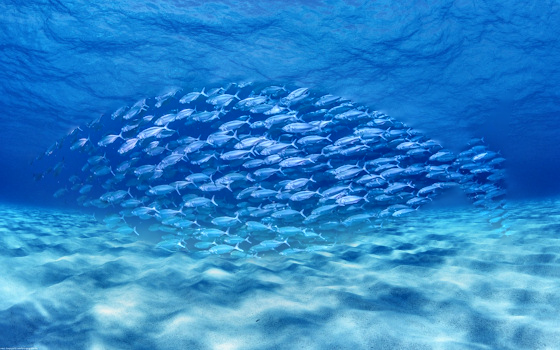
I don't think it turned out particularly well, it feels like I can still clearly see the seam between the two images on the top of the fish shape. I suppose the blending method might be better suited to combining two images than blending an image into an existing background.
The next thing I tried was to blend an x-ray onto a person. Here are the two original images:
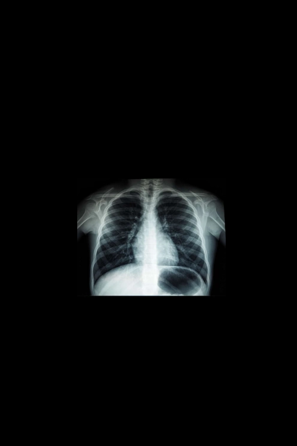
This is the final result:
I probably could have done a better job on aligning the images (I don't know much about anatomy), but I think the effect works regardless.
Here's the recreation of figure 10 in the paper:
Note: When creating the Gaussian stack for these two irregular masks, I just used the unmodified create_gaussian_stack function I defined at the start of part 2.3, instead of the specialized function
used to create the left/right masks. The opposite mask stack was then created by subtracting the Gaussian stack for the left mask from a 4d matrix of all ones (the matrix's dimensions are (level, y, x, channel)).
I did this because the outer rows/columns of the irregular mask images are black anyways, so zero padding doesn't add any spurious edges.
Bells and Whistles
I already have color in my existing splined images, so I'm experimenting with using a colored mask. I'm still keeping the mask for the person as fully black wherever the mask for the x-ray has any color, because I don't want any details from the person in the middle of the x-ray mask.
Mask:
This is the final result:
I think it works reasonably well, but I think the effect might better suit a different set of images.